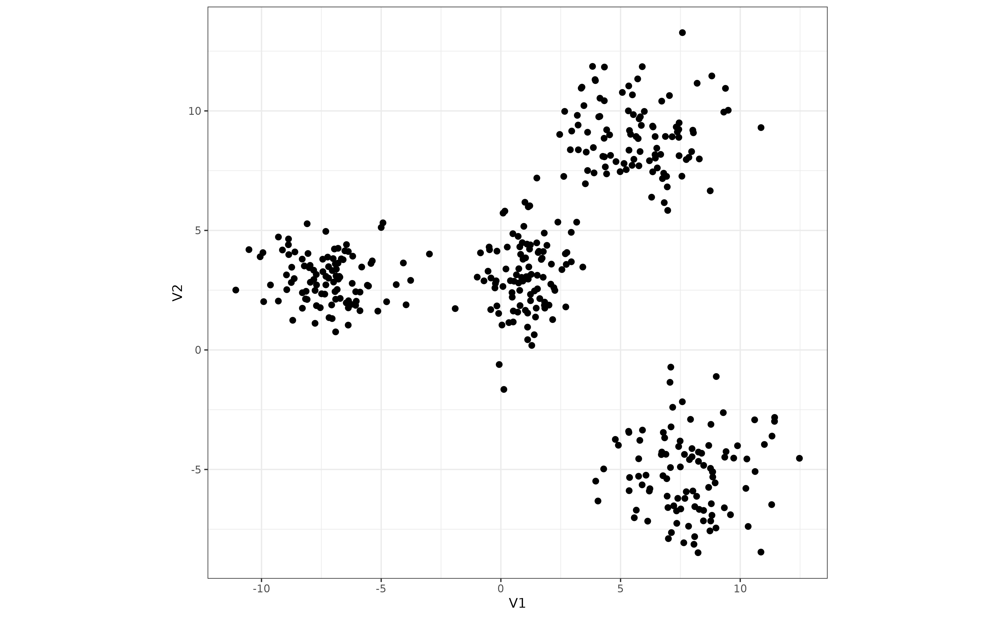
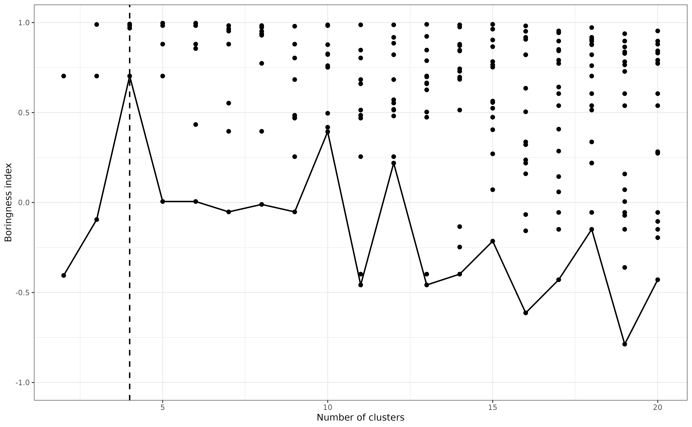

Using `boRing` to improve clustering
Simon Garnier
2024-05-10
clustering.RmdThis vignette demonstrates how to use boRing during
clustering operations to determine the “best” number of clusters in a
data set. Here, we consider that a “good” cluster is a cluster that only
has one mode.
For this example, we use the four_Gaussians data set
provided with the boRing package. This data set was
randomly generated from four bivariate Gaussians distributions with
diffent parameters. It looks like this:
data(four_Gaussians)
ggplot(as.data.frame(four_Gaussians)) +
aes(V1, V2) +
geom_point(size = 1) +
coord_equal() +
theme_bw(base_size = 7)
Next, we apply the k-means clustering to this data set with different numbers of clusters (from 2 to 20). Each time, we measure the boringness index of the clusters identified by the algorithm.
k <- 2:20
boring_idx <- data.frame(
k = rep(k, k),
idx = NA
)
for (i in seq_along(k)) {
km <- kmeans(four_Gaussians, k[i], 100, 10)
boring_idx[boring_idx$k == k[i], 2] <- sapply(
unique(km$cluster),
function(j) {
idx <- km$cluster == j
boring(four_Gaussians[idx, ])
}
)
}
#> Warning in sqrt(det(sigma)): NaNs producedFinally, for each number of clusters, we find the cluster with the lowest boringness index (that is, the least unimodal-looking cluster of the lot). The “best” number of clusters is that for which the lowest boringness index is the highest.
In the graph below, each dot represents the boringness index of each cluster identified by the k-means algorithm for diffent number of clusters. The black line represents the the cluster with the lowest boringness index in each case. The vertical dashed line indicates the estimated “best” number of clusters, four in this case.
best_k <- k[
which.max(
by(boring_idx, boring_idx$k, min)
)
]
ggplot(boring_idx) +
aes(k, idx) +
geom_point(size = 1) +
geom_vline(xintercept = best_k, linetype = 2) +
stat_summary(fun = min, geom = "line") +
coord_cartesian(ylim = c(-1, 1)) +
labs(x = "Number of clusters", y = "Boringness index") +
theme_bw(base_size = 7)
#> Warning: Removed 1 row containing non-finite outside the scale range
#> (`stat_summary()`).
#> Warning: Removed 1 row containing missing values or values outside the scale range
#> (`geom_point()`).